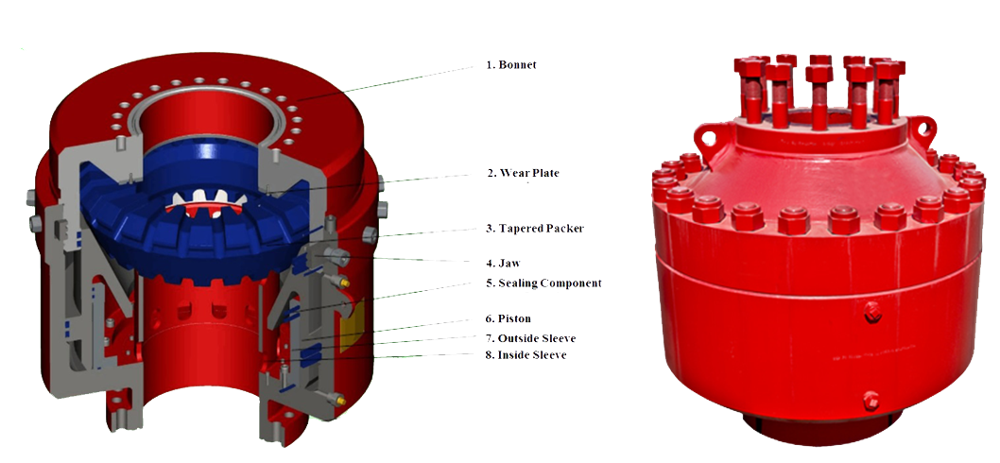

The Rig Equipment responsible for preventing the build-up of unwanted formation fluids that lead to Blowout.
Well Control component consist of the following :
Annular Blowout Preventer
The annular blowout preventer was invented by Granville Sloan Knox in 1946; a U.S. patent for it was awarded in 1952. Often around the rig it is called the "Hydril", after the name of one of the manufacturers of such devices.
An annular-type blowout preventer can close around the drill string, casing or a non-cylindrical object, such as the kelly . Drill pipe including the larger-diameter tool joints (threaded connectors) can be "stripped" (i.e., moved vertically while pressure is contained below) through an annular preventer by careful control of the hydraulic closing pressure. Annular blowout preventers are also effective at maintaining a seal around the drill pipe even as it rotates during drilling. The original type of annular blowout preventer uses a “wedge-faced” (conical-faced) piston. As the piston rises, vertical movement of the packing unit is restricted by the head and the sloped face of the piston squeezes the packing unit inward, toward the center of the wellbore.

Ram Blowout Preventer
The ram BOP was invented by James Smither Abercrombie and Harry S. Cameron in 1922, and was brought to market in 1924 by Cameron Iron Works .
A ram-type BOP is similar in operation to a gate valve , but uses a pair of opposing steel plungers, rams. The rams extend toward the center of the wellbore to restrict flow or retract open in order to permit flow. The inner and top faces of the rams are fitted with packers (elastomeric seals) that press against each other, against the wellbore, and around tubing running through the wellbore. Outlets at the sides of the BOP housing (body) are used for connection to choke and kill lines or valves. Rams, or ram blocks, are of four common types: pipe, blind, shear, and blind shear.
Diverter
Diverter system is the equipment often used in the offshore oilfield on platforms and jack-up rigs to protect against shallow gas kicks during drilling operations. Diverter system is mostly to control the direction of drilling fluid from wellhead to surface platform, control the well kick and shallow gas kick.
In the event of a shallow gas kick, the diverter is energized to seal around the drill pipe and divert the gas safely overboard. Diverter system must be equipped with hydraulic control system during operation. And it can seal different size of drill pipe.
Drilling Spools
Drilling spools made the connection between the wellhead equipment, the blowout preventers stack and choke and kill manifold.
Drilling spools allow the smooth circulation of mud during drilling operations and usually have the same nominal top and bottom end connections.
Manifold, Valves and Sensors
Drilling Fluid Manifold , or Mud Valve Manifold , is widely used in onshore drilling platform and offshore platform. The drilling fluid manifold is one of main devices for jet grouting well drilling. It gathers mud discharged from 2 or 3 slush pumps and transmits it to well and mud gun through pump manifold and high pressure pipe. Under the control of high pressure valve, high pressure mud fluid is inputted to drilling pipe in wall to spurt from drilling bit and produce high pressure mud stream and realize jet grouting well drilling finally. Mud Valve Manifolds mainly consist of mud gate valve, high pressure union, tee, high-pressure hose, elbow, pup joints, pressure gauge etc. They are specifically made for mud, cement, fracturing and water service and feature easy operation and simple maintenance.
Accumulator
A BOP accumulator unit (also known as a BOP closing unit) is one of the most critical components of blow out preventers. Accumulators are placed in hydraulic systems for the purpose of storing energy to be released and transferred throughout the system when it is needed to accomplish specific operations. BOP accumulator units also provide hydraulic support when pressure fluctuations occur. These fluctuations happen often in positive displacement pumps due to their operational functions of trapping and displacing fluid.